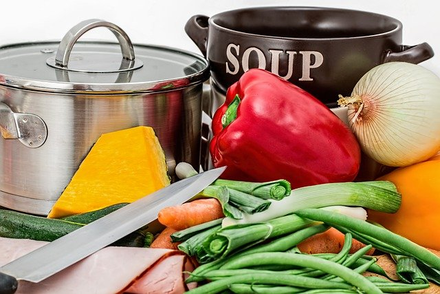

Strona z większą ilością przepisów: gotowanie.onet.pl
Dlaczego warto gotować?
Gotowanie to świetna zabawa
Przepis na naleśniki
Lista składników
Do wysokiej miski dodajemy mąkę, mleko, wodę gazowaną, jajka i szczyptę soli.
Miksujemy przez około minutę do momentu połączenia się składników.
Naleśniki smażymy na patelni teflonowej.
Następnie przewracamy na drugą stronę i ponownie smażymy do zarumienia naleśników.